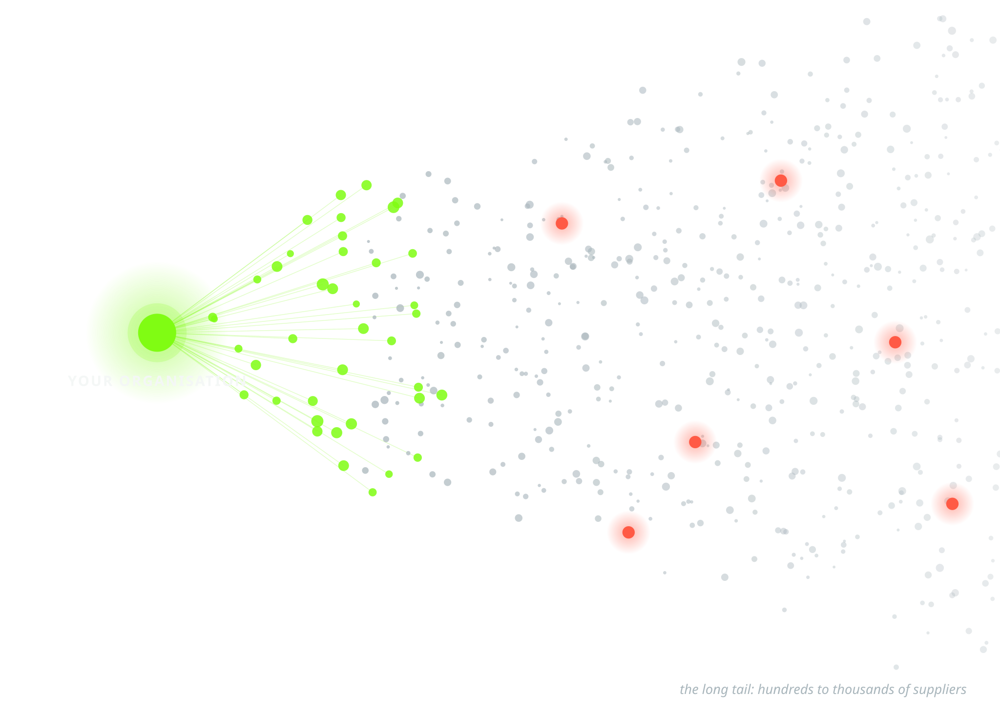

Executive summary · Cyber supply chain risk
How the surge in supply chain breaches, the software your suppliers run, and the explosion in AI vulnerabilities are reshaping cyber supply chain risk, and why continuous exposure intelligence across hundreds to thousands of suppliers is now a board-level requirement.
Executive summary
Most organisations still picture their supply chain as a list of vendors. In reality it is a sprawling, constantly changing software estate: SaaS platforms, managed services, logistics partners, component makers, and the open-source and AI building blocks every one of them runs on. Your risk now extends to every line of code your suppliers depend on.
Supply chain breaches are no longer the exception. Verizon’s 2026 Data Breach Investigations Report found 48% of breaches now involve a third party, up 60% in a single year, and exploitation of vulnerabilities is now the most common way attackers get in.
Yet most organisations still track suppliers across disparate lists, depend on affected suppliers to tell them when something goes wrong, and have little or no visibility of the software those suppliers provide. Regulation is closing that gap fast: DORA and the EU Cyber Resilience Act now expect organisations to know their ICT providers and the software components in their products.
All of this is happening while vulnerabilities explode. A record 48,185 CVEs were published in 2025, and AI-related vulnerabilities grew almost twice as fast as the market overall.
The result is a long tail: hundreds to thousands of suppliers and their software sitting outside any continuous oversight. That is exactly where attackers look for the path of least resistance.
The bottom line
You cannot assess your way out of a real-time problem. Supply chain risk now moves at the speed of exploitation, and oversight has to move with it.
Cytidel Breach Monitoring watches your suppliers and the software they provide, gives advanced early warning on vulnerabilities and pre-CVEs, and distils global threat, exploit and breach news into exposure intelligence for your business, industry, geography and suppliers, underpinned by threat actor and vulnerability data and Cytidel’s own AI models. No supplier cap, no waiting to be told.
01 · The supply chain problem
Supply chain risk is not one problem. Pull it apart and it shows up from several directions at once: a sharp rise in third-party breaches, fragmented supplier data and poor disclosure, and a vast, largely unmonitored software estate, all while the number of vulnerabilities explodes.
Verizon’s 2026 DBIR shows how quickly the centre of gravity has shifted. Third-party involvement in breaches rose from 30% to 48% in a year, and vulnerability exploitation (31%) has overtaken credential abuse (13%) as the leading initial access vector. As Verizon puts it, as organisations rely more on third parties for services and software, “their exposure increases, as well.”
Third-party risk programmes were built for a slower world. They concentrate effort on a strategic tier, usually the few dozen suppliers with the biggest contracts, and assess them periodically. Everyone else sits in the long tail: smaller software vendors, niche service providers, sub-processors and the fourth parties behind them.
Every supplier is also software. The platforms, products and components your suppliers provide carry their own vulnerabilities, and regulators now expect you to know about them:
SBOMs turn a supplier list into a component list, and the numbers grow quickly:
Illustrative: 500 suppliers × ~5 products each × ~100 components per product. No team can monitor this manually.
Each of these angles would be hard enough on its own. They are converging at the exact moment AI is driving the biggest surge in vulnerabilities the industry has seen.
Case in point · Global luxury automotive manufacturer
A primary supplier to the manufacturer was affected when one of that supplier’s own suppliers suffered a breach of its Salesforce environment. Timely disclosure meant the manufacturer was not left blind, but without that notification the exposure could have gone undetected for 20+ days.
Its existing intelligence feed was capped at 40 suppliers, lacked threat actor context and offered no early warning on AI vulnerabilities. A wider industry cyber incident, reaching it through shared services rather than its own systems, had already exposed the risk.
The conclusion from its security leadership was clear: reliance on a third party choosing to disclose is not a control.
02 · The new threat landscape
Vulnerability volume has been climbing for a decade, but the last two years have broken the curve. Published CVEs rose 67% in two years, from 28,818 in 2023 to 48,185 in 2025. Behind that headline sits a structural shift: AI is now accelerating both sides of the equation.
Google’s threat intelligence analysis, published in September 2026, shows monthly vulnerability disclosures doubling from 5,045 in January to 10,477 in July 2026. More exploited vulnerabilities were observed in the first eight months of 2026 (141) than in all of 2025 (127). AI-discovered vulnerabilities are also nastier: 50% enable remote code execution, against 26% for the rest. Verizon’s 2026 DBIR adds that the median threat actor now uses AI assistance across 15 different attack techniques.
Defenders are falling behind: the median time to fully remediate a known-exploited vulnerability rose to 43 days, and only 26% of them were fully remediated in 2025, down from 38% (Verizon DBIR 2026). Multiply that across hundreds of suppliers and their software, and the gap becomes a supply chain visibility crisis.
AI hasn’t just added a new category of vulnerability. It has changed the speed of the whole game. Exploitation now often comes before a patch, a CVE record or a supplier advisory exists.
03 · The as-is reality
Across the security and risk leaders we work with, from automotive and manufacturing to financial services, the same pattern repeats. These are not failures of effort. They are the limits of a model designed before AI changed the pace of risk.
Annual questionnaires and certifications describe a supplier’s posture on the day they were completed. Exploitation now moves in hours and days, not audit cycles.
Legacy monitoring services often cap coverage at a few dozen suppliers. One manufacturer we work with was limited to 40 suppliers against a base many times that size, with supplier data spread across teams.
Most organisations learn of a supplier breach when the supplier chooses to disclose it. Without that notice, exposure can go undetected for 20 days or more. Disclosure is not a control.
CVSS measures theoretical severity, not real-world threat. 30% of vulnerabilities linked to known threat actors in 2025 were rated Low or Medium, so CVSS-led triage pushes them down the queue.
Teams have no view of the vulnerabilities in the software their suppliers provide, no dedicated capability for AI-associated vulnerabilities and no early warning before NVD publication. They react after the fact.
Generic threat feeds lack context, currency and threat actor linkage. Analysts spend their time researching and sorting rather than deciding and acting.
Hiring more analysts will not close a gap measured in thousands of suppliers and hundreds of thousands of components. What works is a model that scales without adding headcount:
Supplier lists, technology stacks and SBOMs feed monitoring automatically, with no supplier cap.
Every new breach, advisory, exploit and threat actor signal is matched to your suppliers and their software and scored without manual research.
The one alert that matters goes to the owner who can act, in the tools they already use, with the evidence attached.
04 · Why Cytidel
Cytidel brings exposure intelligence to the supply chain. We monitor your suppliers and the software they provide, warn you early about the vulnerabilities and breaches that affect them, including pre-CVE and AI vulnerabilities, and distil global threat, exploit and breach news into what matters to your business, industry, geography and suppliers.
Most supplier monitoring stops at the company. Cytidel follows the risk into the technology your suppliers provide, so you see both the breach at the supplier and the vulnerable product in your stack.
| Your suppliers | Their software | |
|---|---|---|
| What we watch | Breach events, vendor advisories, and threat actors targeting the supplier or its sector | The products, platforms and components your suppliers provide, matched to new vulnerabilities and exploits |
| What you get | An alert when a supplier, or a supplier’s supplier, is breached or targeted | An alert when software you depend on is exposed, often before NVD or an advisory |
| How it scales | Full supplier base, no cap, fed from onboarding and procurement lists | Technology stacks today, maturing to SBOM-level component visibility |
For supplier software, the official record is the slowest signal of all. NVD enrichment lags, supplier advisories arrive weeks later if at all, and CISA KEV confirms exploitation only after it is well under way. Cytidel picks up the earliest signals, including exploitation evidence, public exploit code and emerging AI vulnerabilities, often before a CVE is published, so you can act at the start of the window of exposure rather than the end.
≈ 79 days average lead time ahead of CISA KEV (Cytidel product benchmark)
Signals only matter in context. Cytidel scores every signal against who you are, where you operate and who you depend on, using a data and AI foundation built for the job:
Know who is targeting your world.
Know what is being exploited, right now.
Turn signal into a decision.
In one benchmark of CVEs linked to active threat actor groups, 34 of 113 carried Low or Medium CVSS scores. A severity-led process would have deprioritised almost a third of the vulnerabilities attackers were actually using. Threat actor context is what surfaces them.
Every day brings a flood of new vulnerabilities, exploit releases and breach headlines. Cytidel’s Smart Alerts take all of it, filter it by your industry, geography, software and suppliers, and route the one item that needs action to the person who owns the decision, with the context already attached.
| As is | With Cytidel | |
|---|---|---|
| Coverage | A monitored shortlist of strategic suppliers; the long tail assessed annually, if at all | Your full supplier base and their software monitored continuously, with no cap |
| Supplier data | Disparate lists across procurement, finance, IT and security | One monitored view, fed automatically from onboarding and SBOMs |
| Breach detection | Dependent on the supplier choosing to disclose; 20+ days of potential blindness | Breach and vulnerability activity at a supplier surfaced before it propagates into your environment |
| AI & pre-CVE risk | No dedicated capability; discovered after NVD or advisories catch up | Advanced early warning on AI-associated and pre-CVE vulnerabilities |
| Relevance | Generic feeds, not linked to your business or adversaries | Filtered by industry, geography, software and suppliers, with threat actor context |
| Workflow | Manual research, triage and chasing suppliers | Autonomous correlation and triage; one alert routed to the right owner |
| Timing | Act on public confirmation (NVD, CISA KEV, supplier disclosure) | Act on the signal, on average 79 days ahead of CISA KEV |
| Evidence | Hard to show regulators and the board how supplier risk decisions were made | An auditable trail behind every decision, supporting DORA, the CRA and NIS2 |
05 · Measured outcomes
Our published benchmarks come from vulnerability intelligence deployments. Expressed as outcomes, this is what they mean for a security and risk team:
For Breach Monitoring, value is measured against a baseline captured at the start of each proof of value, so every claim is evidenced with the customer’s own data:
| Outcome | How it is measured | Typical starting point |
|---|---|---|
| Supplier coverage | % of supplier base, and their software, under continuous monitoring | A few dozen suppliers (e.g. 40) on a capped feed |
| Time to awareness | Days from a supplier breach or exploit to an alert reaching the owner | Dependent on disclosure; 20+ days possible |
| Time to decision | Time from signal to an agreed action or supplier engagement | Manual research cycle, measured in days |
| Alert actionability | % of alerts that lead to an action | Not measured today |
| Analyst effort | Hours per week on supplier research and triage | Current manual effort |
| Regulatory readiness | Evidence available for DORA registers, CRA reporting and board reviews | Assembled by hand, after the fact |
Supply chain oversight is no longer optional. NIS2 and DORA put explicit obligations on third-party and ICT supply chain risk, the EU Cyber Resilience Act introduces 24-hour reporting of actively exploited vulnerabilities and SBOM requirements, and in automotive, UNECE R155 and R156 require cyber risk management across the vehicle supply chain. Cytidel is ISO 27001:2022 certified, NIS2 Ready and DORA Ready, and was named European CISO Startup of the Year 2026.
06 · Start the conversation
Supply chain breaches have nearly doubled their share of all breaches in a year, supplier data is fragmented, disclosure is unreliable, and the software your suppliers provide is a vast and largely unmonitored attack surface. AI has permanently changed the economics of vulnerability on top of that. Organisations that keep managing supply chain risk through annual assessments and capped watchlists will keep learning about supplier breaches from the supplier, or from the attacker.
The alternative is continuous, autonomous exposure intelligence across the entire supply chain: your suppliers and their software monitored together, early warning before the CVE, context on who is exploiting what, and a single, actionable alert for the person who needs to act. That is what Cytidel Breach Monitoring delivers.
See your long tail
Don’t let the long tail be your blind spot.
Ask us for a Supplier Exposure Assessment: share your supplier list and we will show you what Breach Monitoring sees across your long tail, including AI and pre-CVE exposures and the threat actors behind them.
cytidel.com/cytidel-platform →Sources & notes
The early warning layer for vulnerabilities, threat actors and supplier risk.